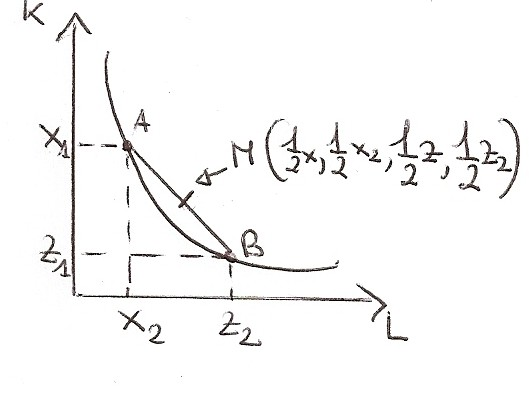
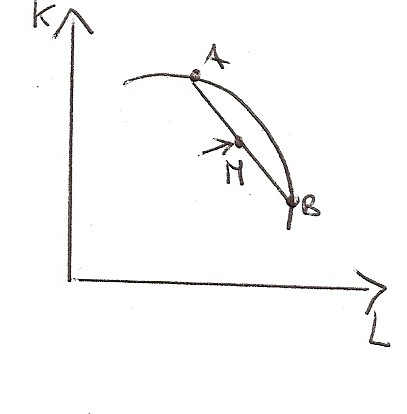
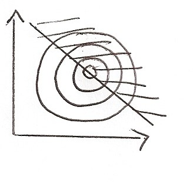
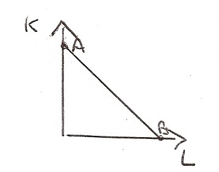

Torna alla pagina di Economia del Cambiamento Tecnologico
:: Economia del Cambiamento Tecnologico ::
Lezione 30/09/2008
Approcci di analisi di teoria della produzione in sequenza storica
In realtà gli approcci all'analisi della produzione si possono trovare già da Aristotele, ma i primi a farne uno studio approfondito furono i fisiocratici (significa potere dominante della natura) e in particolare François Quesnay che scrisse le tavole Input/Output alla base della moderna economia.
Gli approcci che analizzeremo sono:
1. approccio degli economisti classici = così detto perchè i suoi studiosi furono i primi a parlare di economia in questo approccio. Fanno parte di questa teoria:
- Adam Smith (1776 circa)
- David Ricardo (stesso periodo circa)
- Karl Marx viene assegnato a questo periodo anche se il suo pensiero è leggerissimamente diverso
2. approccio neoclassico(o marginalista) = matematici che cercavano di applicare i modelli fisici all'economia. Facevano parte:
- Jevans
- Alfred Marshall
- Wicksell
- Robert Solow (che insieme a Swan scrisse un libro importante sull'economia nel 1956/57)
3. approccio di Levontiev = ha formalizzato la tavola di François Quisnay e l'ha formulizzata. Queste tavole hanno matrici che rappresentano livelli di Input per produrre un certo Output, utili per fare previsioni, infatti sono utilizzate dall'ISTAT. Sraffa invece sempre in questo periodo ha recuperato gli scritti di Ricardo.
4. approccio di Dagutta(anni 2000) = recupera le teorie neoclassiche di Solow ma applicandole all'economia moderna aggiungendo dei dati.
La formula adottata è:
Y=KηEθL1-η-θ
Dove:
per ogni θ*η є (0;1)
E:
- Y = output
- K = capitale fisico (macchinari, impianti)
- L = capitale sociale (non solo lavoratori dipendenti ma anche in proprio o così via)
- E = capitale naturale (environment)
Il PIL per esempio è determinato da capitale fisico, lavoro umano e risorse naturali del territorio. Questa formula può essere applicata sia su scala nazionale che su scala regionale o locale.
Proprietà della tecnologia
- Continuità
- Monotonicità
- Convessità
Monotonicità
Se abbiamo dei fattori che consentono di produrre una certa quantità di Output se raddoppiamo la quantità di Input l'Output dovrebbe essere almeno il doppio.
Implicitamente la monotonicità fa si che l'isoquanto abbia inclinazione negativa.

Convessità
Se abbiamo due combinazioni produttive A=(x1,x2) e B=(z1,z2) che producono un livello di Y di output, la media aritmetica (ponderata) di A e B rappresenta una nuova combianzione di fattori che consente di ottenere un livello di prodotto almeno pari a Y se non di più.

Se la tecnologia si rappresentasse con una funzione di produzione concava, la media aritmetica starebbe al di sotto.

Perciò per ipotesi la rappresento in questo modo, altrimenti non rappresenterebbe la realtà.
Continuità
Si presuppone che la produzione fili via liscia e non magari a "gradoni". Perciò la funzione è rappresentata come una mappa di isoquanti.
Ma cosa sono questi isoquanti?
L'isoquanto è uno spazio geometrico composto da tutte le combinazioni produttive che consentono di ottenere in modo efficiente da un punto di vista tecnico la medesima quantità di prodotto.
Per rappresentarlo su una superficie piana come il piano cartesiano, immaginiamo di prendere un'arancia e tagliarla in tante fette rotonde. Questi cerchi concentrici messi su un piano e tagliati a metà mi danno le varie funzioni di produzione.

Le forme dell'isoquanto
Le forme variano in base al grado di sostituibilità tra i fattori produttivi. Ci sono essenzialmente quattro forme:
1. Isoquanto lineare
La sostituibilità tra i fattori è perfetta. In questa funzione posso prendere in considerazione anche gli estremi.

2. Isoquanto I/O (o alla Leontiev)
I fattori produttivi non sono sostituibili, esiste un'unica combinazione efficiente.

3. Isoquanto spezzato
La sostituzione tra i fattori produttivi è possibile solo in un numero limitato di situazioni (solo nei punti dove ho le combinazioni produttive ottenute)

4. Isoquanto liscio e continuo
I fattori sono sostituibili in un intervallo del piano.

Prodotto Marginale e Prodotto Medio del fattore produttivo variabile
Da questo tipo di grafico posso ottenere diverse informazioni utili.
I prodotti marginali discendono dalle derivate prime parziali rispetto al K o al L annullate in quel punto. Oppure con definizione economica fino a quando il prodotto marginale del fattore produttivo variabile è pari a zero.
Il prodotto marginale è una misura di produttività
δY δY
PMaL = -- = 0 PMaK = -- = 0
δL δK
Esercizio - Prodotto medio e marginale del valore produttivo variabile
Riprendendo l'esempio dell'altra volta, aggiungiamo il prodotto marginale e il prodotto medio del lavoro, il valore produttivo variabile.
Terra Lavoro Y PMeL (Ptot/L) PMaL(ΔPtot/ΔL)
(misura di produttività) y2-y1/L2-L1
1 0 0 0/0 = 0
6-0/1-0 = 6
1 1 6 6/1 = 6
7.5
1 2 13.5 13.5/2 = 6.75
7.5
1 3 21 21/4 = 7
7
1 4 28 7
6
1 5 34 6.80
4
1 6 38 6.30
0
1 7 38 5.40
-1
1 8 37 4.60
NOTA: Δ (numero nella tabella) = Δ
Rappresentiamo graficamente le due funzioni:

Il prodotto medio (prodotto tot/valore prodotto variabile) cresce, raggiunge un massimo e poi decresce restando sempre positivo(o al massimo nullo).
Il prodotto marginale cresce a tassi crescenti, raggiunge un massimo prima del massimo del prodotto medio, poi decresce, interseca il prodotto medio ne punto in cui il prodotto medio è massimo, quindi continua a decrescere fino ad annullarsi nel punti in cui la f.ne di produzione è massima (essendo la sua derivata prima è logico), infine assume valori negativi.
La funzione di produzione presenta rendimenti marginali crescenti:
- dall'origine degli assi al punto di flesso ->versione matematica
- nell'intervallo in cui la derivata prima del prodotto rispetto al fattore produttivo variabile è decrescente -> versione grafica
- fino al punto di massimo della funzione del prodotto marginale -> versione economica
Da un certo punto in poi (cioè il punto di flesso della funzione di produzione o il punto di massimo della funzione marginale) della funzione di produzione i rendimenti marginali diventano decrescenti.
Torna alla pagina di Economia del Cambiamento Tecnologico